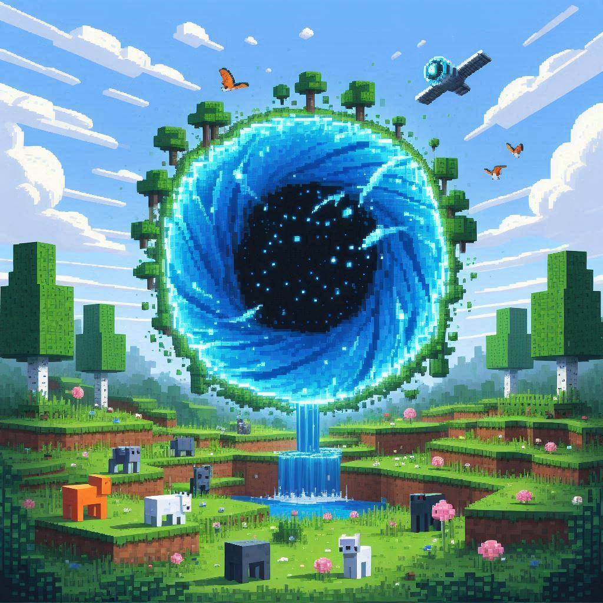

☰

Inicio
Complementos
Ultima version
extras
Dudas del juego
preguntas frecuentes
Opción C
Opción D
Comunidades
Todas las comunidades
Minecraft Principal
Minecraft Preguntas Frecuentes
Cómo jugar Minecraft
Cómo iniciar sesión
Cómo jugar con amigos
Cómo jugar en servidores
Cómo conectarme con amigos
Cómo iniciar mi mundo
Cómo añadir servidores
Cómo crear una cuenta de Minecraft Microsoft
Haz clic en los botones para ver el contenido.